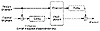

| Previous | Table of Contents | Next |
The theory behind the BBS generator has to do with quadratic residues modulo n (see Section 11.3). Here’s how it works.
First find two large prime numbers, p and q, which are congruent to 3 modulo 4. The product of those numbers, n, is a Blum integer. Choose another random integer, x, which is relatively prime to n. Compute
That’s the seed for the generator.
Now you can start computing bits. The ith pseudo-random bit is the least significant bit of xi, where
The most intriguing property of this generator is that you don’t have to iterate through all i - 1 bits to get the ith bit. If you know p and q, you can compute the ith bit directly.
This property means you can use this cryptographically strong pseudo-random-bit generator as a stream cryptosystem for a random-access file.
The security of this scheme rests on the difficulty of factoring n. You can make n public, so anyone can generate bits using the generator. However, unless a cryptanalyst can factor n, he can never predict the output of the generator—not even with a statement like: “The next bit has a 51 percent chance of being a 1.”
More strongly, the BBS generator is unpredictable to the left and unpredictable to the right. This means that given a sequence generated by the generator, a cryptanalyst cannot predict the next bit in the sequence nor the previous bit in the sequence. This is not security based on some complicated bit generator that no one understands, but the mathematics behind factoring n.
This algorithm is slow, but there are speedups. As it turns out, you can use more than the least significant bit of each xi as a pseudo-random bit. According to [1569,1570,1571,35,36], if n is the length of xi, the least significant log2n bits of xi can be used. The BBS generator is comparatively slow and isn’t useful for stream ciphers. However, for high-security applications, such as key generation, this generator is the best of the lot.
In an information-theoretic approach to stream ciphers, the cryptanalyst is assumed to have unlimited time and computing power. The only practical stream cipher that is secure against an adversary like this is a one-time pad (see Section 1.5). Since bits would be impractical on a pad, this is sometimes called a one-time tape. Two magnetic tapes, one at the encryption end and the other at the decryption end, would have the same random keystream on them. To encrypt, simply XOR the plaintext with the bits on the tape. To decrypt, XOR the ciphertext with the bits on the other, identical, tape. You never use the same keystream bits twice. Since the keystream bits are truly random, no one can predict the keystream. If you burn the tapes when you are through with them, you’ve got perfect secrecy (assuming no one else has copies of the tape).
Another information-theoretic stream cipher, developed by Claus Schnorr, assumes that the cryptanalyst only has access to a limited number of ciphertext bits [1395]. The results are highly theoretical and have no practical value, at least not yet. For more details, consult [1361,1643,1193].
In a randomized stream cipher, the cryptographer tries to ensure that the cryptanalyst has an infeasibly large problem to solve. The objective is to increase the number of bits the cryptanalyst has to work with, while keeping the secret key small. This can be done by making use of a large public random string for encryption and decryption. The key would specify which parts of the large random string are to be used for encryption and decryption. The cryptanalyst, not knowing the key, is forced to pursue a brute-force search through the random string. The security of this sort of cipher can be expressed by the average number of bits a cryptanalyst must examine before the chances of determining the key improve over pure guessing.
Rip van Winkle Cipher
James Massey and Ingemar Ingemarsson proposed the Rip van Winkle cipher [1011], so named because the receiver has to receive 2n bits of ciphertext before attempting decryption. The algorithm, illustrated in Figure 17.10, is simple to implement, provably secure, and completely impractical. Simply XOR the plaintext with the keystream, and delay the keystream by 0 to 20 years—the exact delay is part of the key. In Massey’s words: “One can easily guarantee that the enemy cryptanalyst will need thousands of years to break the cipher, if one is willing to wait millions of years to read the plaintext.” Further work on this idea can be found in [1577,755].

Figure 17.10 Rip van Winkle cipher.
Diffie’s Randomized Stream Cipher
This scheme was first proposed by Whitfield Diffie [1362]. The data are 2n random sequences. The key is k, a random n-bit string. To encrypt a message, Alice uses the kth random string as a one-time pad. She then sends the ciphertext plus the 2n random strings over 2n + 1 different communications channels.
Bob knows k, so he can easily choose which one-time pad to decrypt the message with. Eve has no choice but to examine the random sequences one at a time until she finds the correct one-time pad. Any attack must examine an expected number of bits which is in O(2n). Rueppel points out that if you send n random strings instead of 2n, and if the key is used to specify a linear combination of those random strings, the security is the same.
Maurer’s Randomized Stream Cipher
Ueli Maurer described a scheme based on XORing the plaintext with several large public random-bit sequences [1034,1029,1030]. The key is the set of starting positions within each sequence. This turns out to be provably almost secure, with a calculable probability of being broken based on how much memory the attacker has at his disposal, without regard to the amount of computing power he has. Maurer claims that this scheme would be practical with about 100 different sequences of 1020 random bits each. Digitizing the face of the moon might be one way to get this many bits.
If performance is no issue, there’s no reason not to choose multiple stream ciphers and cascade them. Simply XOR the output of each generator with the plaintext to get the ciphertext. Ueli Maurer’s result (see Section 15.7) says that if the generators have independent keys, then the security of the cascade is at least as secure as the strongest algorithm in the cascade. It is probably much more secure than that.
Stream ciphers can be combined in all the same ways as block ciphers (see Chapter 15). Stream ciphers can be cascaded (see Section 15.7) with other stream ciphers, or together with block ciphers.
| Previous | Table of Contents | Next |
){kind=link}
){kind=link}